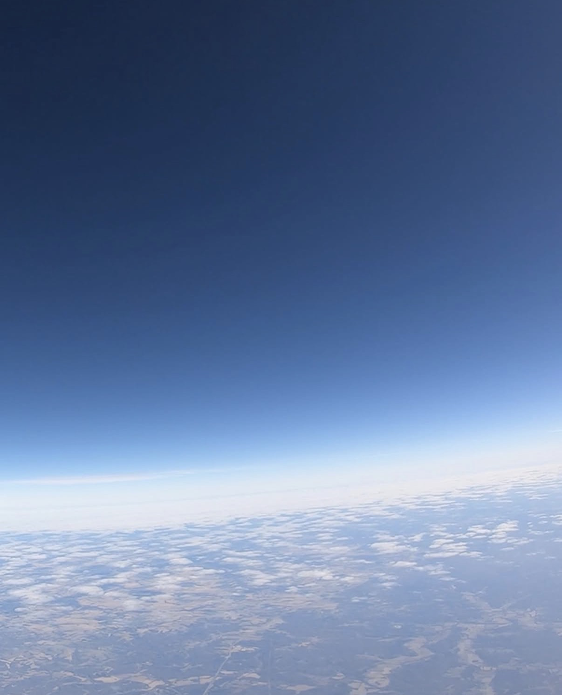
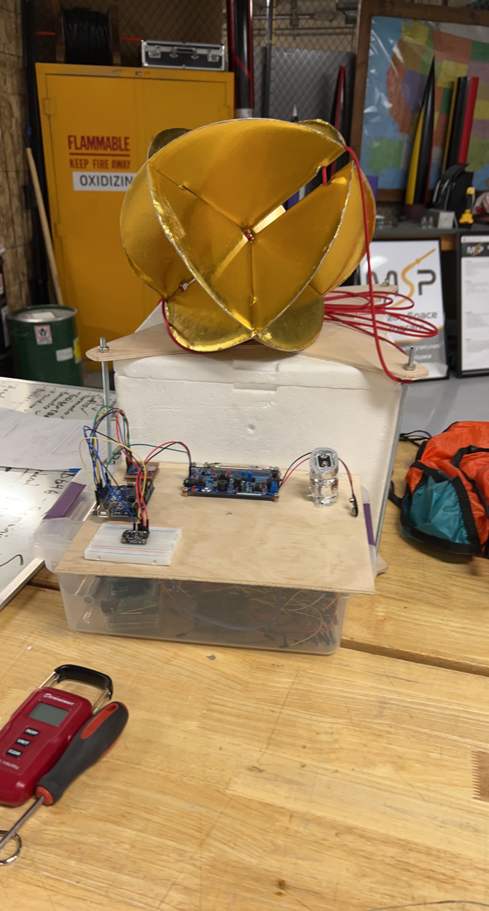
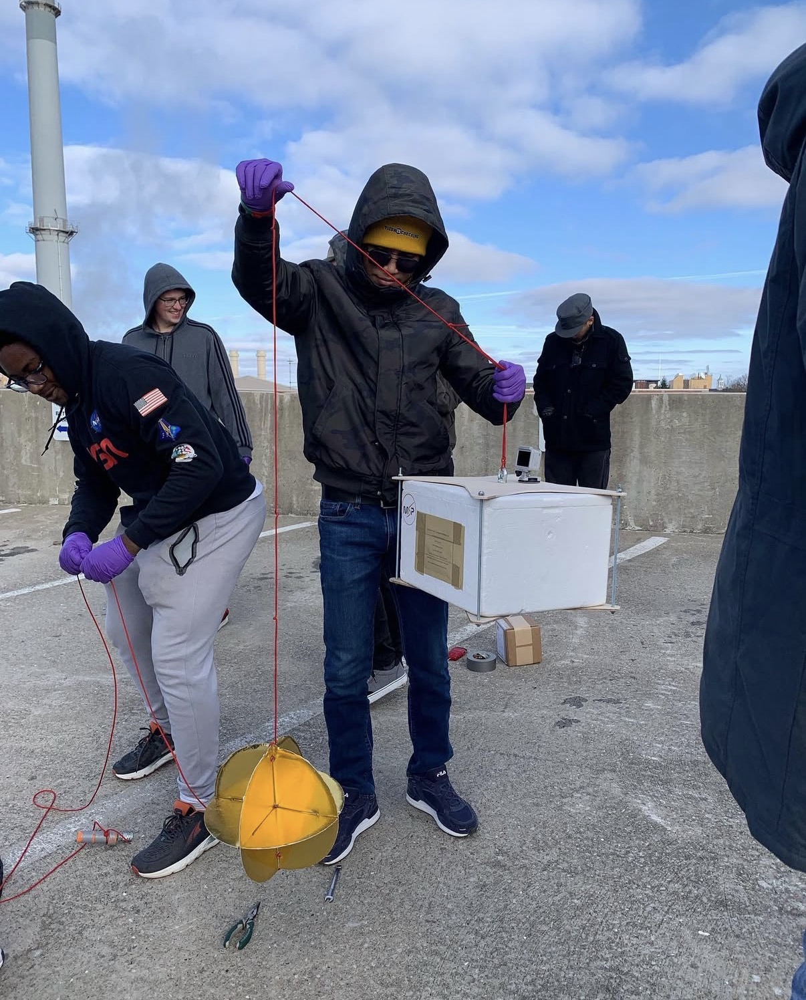

<section class="py-20 bg-white dark:bg-gray-900">
  <div class="max-w-6xl mx-auto px-6">
    <h1 class="text-4xl md:text-5xl font-bold text-center mb-12 text-gray-900 dark:text-gray-100 tracking-tight">
      High-Altitude Balloon Project
    </h1>

    <!-- Overview Section with Integrated Photo -->
    <div class="bg-gray-50 dark:bg-gray-800/60 backdrop-blur-sm rounded-xl p-6 border border-gray-200 dark:border-gray-600 mb-12 flex flex-col md:flex-row items-center gap-6">
      <div class="flex-1">
        <h2 class="text-2xl font-mono text-emerald-600 dark:text-emerald-400 mb-4">Overview</h2>
        <p class="text-gray-900 dark:text-gray-100 mb-4">
          A simple yet impactful project launching a weather balloon to 75,000 feet to collect atmospheric data and test radiation exposure theories.
        </p>
        <p class="text-sm italic text-gray-600 dark:text-gray-300">
          Goals: Measure altitude, temperature, and radiation levels; validate increased radiation at higher altitudes.
        </p>
      </div>
      <figure class="flex-1 max-w-md">
        
        <figcaption class="text-sm text-gray-600 dark:text-gray-300 italic mt-2 text-center">View from 75,000 feet</figcaption>
      </figure>
    </div>

    <!-- My Role Section with Integrated Photo -->
    <div class="bg-gray-50 dark:bg-gray-800/60 backdrop-blur-sm rounded-xl p-6 border border-gray-200 dark:border-gray-600 mb-12 flex flex-col md:flex-row-reverse items-center gap-6">
      <div class="flex-1">
        <h2 class="text-2xl font-mono text-emerald-600 dark:text-emerald-400 mb-4">My Role: Electronics Lead</h2>
        <p class="text-gray-900 dark:text-gray-100 mb-4">
          Assembled the data collection system using Arduino, integrating sensors for data collection during ascent.
        </p>
      </div>
      <figure class="flex-1 max-w-md">
        
        <figcaption class="text-sm text-gray-600 dark:text-gray-300 italic mt-2 text-center">Pre-launch assembly</figcaption>
      </figure>
    </div>

    <!-- Sensors Section with Integrated Photo -->
    <div class="bg-gray-50 dark:bg-gray-800/60 backdrop-blur-sm rounded-xl p-6 border border-gray-200 dark:border-gray-600 mb-12 flex flex-col md:flex-row items-center gap-6">
      <div class="flex-1">
        <h2 class="text-2xl font-mono text-emerald-600 dark:text-emerald-400 mb-4">Sensors & Setup</h2>
        <ul class="space-y-2 text-sm text-gray-600 dark:text-gray-300">
          <li>› Barometer (BMP280): Altitude and temperature tracking.</li>
          <li>› Geiger Counter: Detected radiation to test exposure intensity with altitude.</li>
          <li>› GPS Tracker: Position logging.</li>
          <li>› GoPro Camera: Mounted on top for video capture.</li>
        </ul>
      </div>
      <figure class="flex-1 max-w-md">
        
        <figcaption class="text-sm text-gray-600 dark:text-gray-300 italic mt-2 text-center">Close-up of the wiring/sensor setup.</figcaption>
      </figure>
    </div>

    <!-- Launch Section with Integrated Photo -->
    <div class="bg-gray-50 dark:bg-gray-800/60 backdrop-blur-sm rounded-xl p-6 border border-gray-200 dark:border-gray-600 mb-12 flex flex-col md:flex-row-reverse items-center gap-6">
      <div class="flex-1">
        <h2 class="text-2xl font-mono text-emerald-600 dark:text-emerald-400 mb-4">Launch Day</h2>
        <p class="text-gray-900 dark:text-gray-100 mb-4">
          The team preparing and launching the balloon payload, reaching stratospheric heights.
        </p>
      </div>
      <figure class="flex-1 max-w-md">
        
        <figcaption class="text-sm text-gray-600 dark:text-gray-300 italic mt-2 text-center">Setting up for balloon launch Fall 23'.</figcaption>
      </figure>
    </div>

    <div class="text-center">
      <app-button variant="secondary" routerLink="..">Back to Projects</app-button>
    </div>
  </div>
</section>